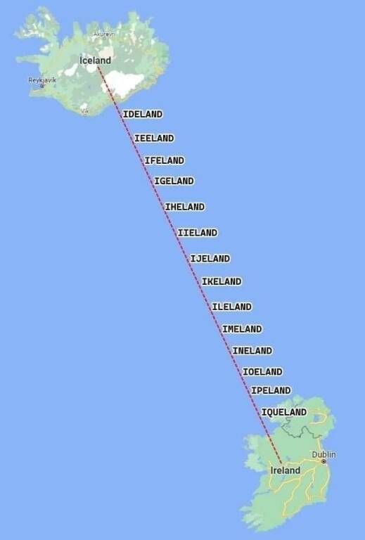

Solution: Around the World in 29 Days
Answer: OUTSIDE THE LOOP
Written by Cauchy
We are presented with an alphabetized list of 28 short journal-style entries, followed by a list of latitude/longitude locations of 14 “extra things”. The journal entries each clue a town/city/municipality somewhere in the world, and we start by solving the clues. Some are ambiguous initially, but most can be tackled immediately, and are a mix of language clues, pop culture references (mostly skewing weebish), local trivia clues (all Googleable), a few cryptic clues, some geographic calculations, and one very silly picture
| Clue | Answer | Comment |
|---|---|---|
| A celebration was taking place in the city when I arrived. I didn't quite understand what it was about, though; something about a "heather week"? | Ede, Netherlands | Translation of Heideweek from Dutch |
| A curious fact I figured out about my destination today: it's just under 7% of the way from Prague to Pittsburgh. | Melle, Germany | See map 1 |
| As I was arriving at my next destination, I met two gentlemen who were departing for another city about 150 kilometers to the west. | Verona, Italy | Reference to Two Gentlemen of Verona, where the title characters travel from Verona to Milan |
| Didn't I just see the name of this city in an anime I was watching this season? The green haired girl told the lady who punches people it was her real name. | Sanya, China | Reference to the Fall 2025 anime May I Ask for One Final Thing? |
| I arrived just in time for a home game and got to see the Fightin' Blasters in action. Update: I've been informed that's not the team's nickname. | Kochi, India | Reference to the Kerala Blasters Football Club |
| I didn't know much about this place I arrived in. I looked it up on Wiki, and it said it was known for producing agricultural products, clothing and cattle. | Jaraguá, Brazil | Searching Wikipedia for “agricultural products, clothing and cattle” yields Jaraguá as the first result (accurate as of December 5), as does searching Google if it’s in quotes |
| I saw a giant fish statue as I arrived at today's city. I asked a local what it was called, and they told me it was called "The Fish". Gee, thanks. | Epe, Nigeria | Reference to https://en.wikipedia.org/wiki/The_Fish_Statue,_Epe |
| I saw this next place is twin towns with Christchurch! But wouldn't you know, it was a different Christchurch; it's "once removed" from the New Zealand one. | Aalen, Germany | Christchurch, New Zealand is sister cities with Christchurch, Dorset, which is twin towns with Aalen, Germany |
| I thought the tour guide was going to show me the Guru of Time! But no, that's just the name of the municipality's administrative seat. | Baraguá, Cuba | Baraguá’s administrative seat is located in Gaspar |
| I thought this city's name meant crab in the local language, but apparently it's written differently. Tomorrow I'll head back to my starting city and complete my tour, and then maybe I can figure out these extra things I picked up along the way. | Kani, Japan | 可児は蟹じゃない |
| I took a visit to the Buzwagi Gold Mine shortly after I arrived at today's town. | Kahama, Tanzania | The Buzwagi Gold Mine is a few kilometers away from the town |
| I was able to see a fossil of a man covered in calcite! I got to try some of the local bread too, which the city is also famous for. | Altamura, Italy | References to the Altamura Man and Pane di Altamura |
| I was inspired to write another cryptic clue today: "Endless donations" rejected, securing the Spanish revolutionary (5) | Mella, Cuba | (ALM[s])<= containing EL; the town was named after a revolutionary |
| I've been thinking of trying my hand at writing cryptic clues. Here's one I came up with today: Blended orange municipality (6) | Gerona, Philippines | (ORANGE)* |
| Maybe it was a mistake taking a train to my next city; it didn't depart until 3:10! | Yuma, USA | Reference to 3:10 to Yuma |
| My next destination is the birthplace of one of my favorite comedians! Inspired by that, this morning I ordered my coffee covered in bees. | Aden, Yemen | Reference to Eddie Izzard |
| Now almost 2/3 of the way through my tour, I visited a world capital whose name reminded me of a BIG member of Hololive. | Sanaa, Yemen | |
| On my way to the next destination, I thought up yet another cryptic clue: City I'm almost in! (4) | Yima, China | The exclamation mark means this is an &lit clue. Hidden word: citY IM Almost |
| On the tour I took today, I learned that this city's name means "sail" in the official language. | Tanga, Tanzania | The Swahili word for “sail” is “tanga” |
| The town I arrived at today was just over 5/12 of the way from Tehran to Hamburg. | Anapa, Russia | See map 2 |
| There wasn't much to do on the first day of the tour; I'll start traveling to other cities tomorrow, one per day, but for today I guess I can sneak in a quick trip to one of the local sights. I always wanted to visit an Inari shrine, and one of the biggest is here! | Kasama, Japan | Reference to the Kasama Inari Shrine |
| This city hosted the Winter Olympics! Never a yacht knee, as the locals say! (I think?) | Sochi, Russia | Mistranscription of невероятный |
| This place (municipality, I think it's called?) is huge! It's 12.8% of its state by area, which is in turn 14.7% of its country by area, which is in turn 47.7% of its continent by area. | Altamira, Brazil | Altamira: 159,533.73 km2 Pará: 1,247,689.5 km2 Brazil: 8,515,767 km2 South America: 17,840,000 km2 |
| This place shares a name with someone from my favorite group of female mangaka! Update: wait, what do you mean she dropped it from her pen name?? | Apapa, Nigeria | Mokona Apapa of CLAMP changed her pen name to just Mokona in 2004 |
| This town is almost exactly 1/3 of the way from London to Wrocław. | Uden, Netherlands | See map 3 |
| Today I ended up in a city that's about 57.4% of the way from New Orleans to Amarillo. | Allen, USA | See map 4 |
| When I saw this city's name, I thought of crocodiles. I realize that says more about my weeb nature than the city. | Wani, India | 鰐 |
While I was looking through some old memes today en route to the next city, a very silly idea entered my head and I had to make this: (see image on right)  |
Tanza, Philippines | tan(ZA) |
The first two tools at this link can be very helpful for figuring out the clues relating to locations between two cities: the first tool establishes the bearing and distance from the first city of the clue to the second, and then the first city, bearing, and proportional distance can be entered into the second tool to find the specified location between the two cities.
We eventually notice two patterns about the answers to the clues. First, the countries of the answers appear twice each. But maybe even more striking, for each answer, there exists a second answer that differs from the first by changing one letter. These observations can help in clue solving, for example suggesting Dutch or Swahili for the languages of Ede or Tanga’s clues, or helping lock in the answers to the cryptic clues.
The puzzle’s title and the clues for Kasama and Kani suggest that we are traveling from city to city on a multi-day tour around the world, then returning to the first city as our 29th “step”, and indeed, by starting at Kasama (whose clue mentions being the first day of the tour) and alternating between the city differing by one letter and the city in the same country, we visit all 28 clued cities and end in Kani (whose clue mentions that the next stop will be the first city again, meaning it’s the last). The order is specifically:
- Kasama, Japan
- Kahama, Tanzania
- Tanga, Tanzania
- Tanza, Philippines
- Gerona, Philippines
- Verona, Italy
- Altamura, Italy
- Altamira, Brazil
- Jaraguá, Brazil
- Baraguá, Cuba
- Mella, Cuba
- Melle, Germany
- Aalen, Germany
- Allen, USA
- Yuma, USA
- Yima, China
- Sanya, China
- Sanaa, Yemen
- Aden, Yemen
- Uden, Netherlands
- Ede, Netherlands
- Epe, Nigeria
- Apapa, Nigeria
- Anapa, Russia
- Sochi, Russia
- Kochi, India
- Wani, India
- Kani, Japan
- Kasama, Japan
With the cities placed in a cycle, we can finally turn our attention to the Extra Thing Locations. In fact, each of these locations lies on the straight path between a pair of cities that are one letter off. Making a copy of the Google Maps link can help with this realization, since it already has the Extra Thing Locations entered into it, and we can enter our clue cities and connect them via a straight line to see that an Extra Thing Location lies between them. Note that “straight line” paths on a globe generally do not look straight on map projections, but both the tool linked above and Google Maps take this into account. This aha can be deduced after noticing the pairs of cities off by one letter, and can be used in “backsolving” clues by extending a path from a city through an unused Extra Thing Location to look for other cities that are off by a letter.
The “between two cities”-style clues for individual cities hopefully let us think of the previous aha fairly easily, as well as this next one: we should look at what proportion of the way the Extra Thing Location is from one city to another along the path. For example, 31° 54′ 29″ N, 093° 22′ 42″ E is on the straight path from Kasama, Japan to Kahama, Tanzania, and it is specifically 4/11 of the way from Kasama to Kahama. The last aha is that Kasama and Kahama differ by changing S to H, which is a shift of 11 places in the alphabet. So the Extra Thing along this path is the letter that’s 4/11 of the way from S to H, which is O.
| First city | Second city | Extra Thing Location | Proportion | From | Extra letter | To |
|---|---|---|---|---|---|---|
| Kasama, Japan | Kahama, Tanzania | 31° 54′ 29″ N, 093° 22′ 42″ E |
4/11 | S | O | H |
| Tanga, Tanzania | Tanza, Philippines | 10° 44′ 51″ N, 098° 41′ 20″ E |
14/19 | G | U | Z |
| Gerona, Philippines | Verona, Italy | 49° 21′ 19″ N, 028° 13′ 52″ E |
13/15 | G | T | V |
| Altamura, Italy | Altamira, Brazil | 36° 08′ 42″ N, 001° 25′ 06″ E |
1/6 = 2/12 | U | S | I |
| Jaraguá, Brazil | Baraguá, Cuba | 11° 05′ 59″ S, 053° 03′ 17″ W |
1/8 | J | I | B |
| Mella, Cuba | Melle, Germany | 51° 17′ 58″ N, 020° 18′ 52″ W |
3/4 | A | D | E |
| Aalen, Germany | Allen, USA | 56° 54′ 53″ N, 034° 15′ 15″ W |
4/11 | A | E | L |
| Yuma, USA | Yima, China | 39° 04′ 01″ N, 121° 00′ 45″ W |
1/12 | U | T | I |
| Sanya, China | Sanaa, Yemen | 18° 33′ 57″ N, 062° 53′ 45″ E |
17/24 | Y | H | A |
| Aden, Yemen | Uden, Netherlands | 21° 20′ 18″ N, 039° 31′ 48″ E |
1/5 = 4/20 | A | E | U |
| Ede, Netherlands | Epe, Nigeria | 21° 44′ 26″ N, 004° 23′ 32″ E |
2/3 = 8/12 | D | L | P |
| Apapa, Nigeria | Anapa, Russia | 26° 39′ 10″ N, 017° 24′ 48″ E |
1/2 | P | O | N |
| Sochi, Russia | Kochi, India | 27° 56′ 12″ N, 060° 52′ 41″ E |
1/2 = 4/8 | S | O | K |
| Wani, India | Kani, Japan | 32° 17′ 03″ N, 110° 42′ 22″ E |
7/12 | W | P | K |
This map shows the fourteen straight lines between cities differing by one letter, along with equally spaced marks along the line showing “one-letter steps” from one to the other, to help visualize this extraction. (For example, between Kasama and Kahama are labeled Karama, Kaqama, Kapama, …, Kakama, Kajama, and Kaiama.) The Extra Thing Locations are marked in green.
Reading these “extra” letters in the order of the cycle spells the answer, OUTSIDE THE LOOP.
Author’s Notes
Seven weeks ago, someone sent me a meme image on discord:

I saw it and instantly thought it should be a puzzle, and what you see now is how that idea came to fruition. I eventually tracked down the image to what I believe to be its source: https://x.com/UndeniablyAlex/status/1517206009474949121
Someone told me my clues were “avant-garde”, and all I can say is that this is how my brain works.